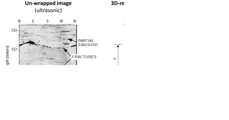

Subsections
Download the file LostHills.xls.
We would like to know the state of stress in the subsurface and its influence on a hydraulic fracture completion.
At every depth (and data-point) along the vertical well:
- Compute (and plot) total vertical stress as a function of depth (you may assume homogeneous rock above 1,750 ft), and overpressure parameter.
- Compute dynamic Poisson’s ratio and dynamic Young’s modulus from compressive and shear slowness (be careful with unit conversion).
- Compute static Young's modulus using a coefficient
.
- Compute (and plot) static plane strain modulus
 (Poisson ratio remains the same).
(Poisson ratio remains the same).
- Compute (and plot) horizontal stress assuming theory of elasticity and no tectonic strains.
- Compute (and plot) total maximum and minimum horizontal stress assuming theory of elasticity and
 and
and
 .
.
- The pay-zone is between 2,100 ft and 2,450 ft. A hydraulic fracture is planned to be executed with a vertical well at a depth between 2,130 ft and 2,160 ft. What will be the height of this fracture? Will it reach out to the entire pay zone?
Figure 1.4:
Bulk rock mass density, P-wave slowness, and S-wave slowness along a vertical well in the Lost Hills field.
|
![\includegraphics[scale=0.60]{.././Figures/LostHills.PNG}](img29.svg)